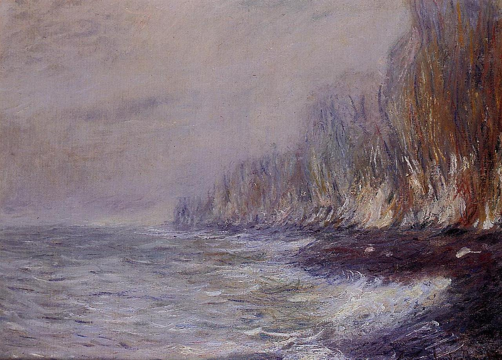

Tags: rain-and-fog, Normandy, cliffs-and-rocks
Style: Impressionism
Artist: Monet Claude
Title: The Effect of Fog near Dieppe
Year: 1882
Genre: landscape
Categories: fountain (15.7%); geyser (12.1%); hay (9.2%); broom (8.2%); dam (7.5%)
Similar Images: